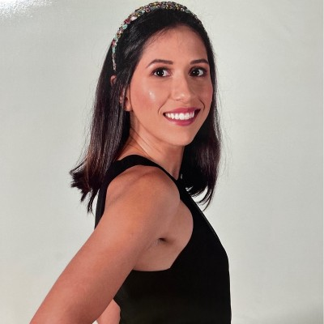

Cirurgiã-dentista formada pela Faculdade de Odontologia de Araraquara (FOAr - UNESP), com sólida base científica e comprometimento ético.
Especialista pela Faculdade Israelita Albert Einstein, foco minha atuação na Estratégia de Saúde da Família e Comunidade e na gestão de serviços de saúde pública.
Atualmente, atuo na rede pública e sigo em constante aprimoramento através do Mestrado Profissional na FOP UNICAMP, buscando integrar a prática clínica à gestão baseada em evidências.
Anos no SUS
Atendimentos
Projetos de Gestão
O paciente é visto em sua totalidade, com escuta qualificada e empatia.
Compromisso com as melhores práticas e transparência em todos os procedimentos.
Tratamentos fundamentados em estudos científicos atualizados e seguros.
Atendimento humanizado e integral focado no contexto familiar e comunitário.
Educação e promoção de saúde para prevenir doenças bucais e garantir sorrisos saudáveis.
Organização e planejamento de serviços para otimizar o atendimento ao cidadão.
FOP UNICAMP (Em andamento)
Prefeitura Municipal de Motuca (SP)
Faculdade Israelita Albert Einstein
FOAr - UNESP Araraquara
Participação ativa em projetos de ensino e pesquisa durante a graduação na FOAr UNESP.
Pesquisa focada em Gestão e Saúde Coletiva, unindo evidências à prática no SUS.
Participação contínua em eventos científicos nacionais de Odontologia e Saúde Pública.
Cuidado integral e centrado na pessoa, com foco no vínculo e no contexto social da Estratégia de Saúde da Família.
Excelência técnica alimentada pela pesquisa acadêmica contínua, unindo a ciência à realidade do atendimento público.
Visão sistêmica para otimização de recursos e planejamento de serviços, visando a eficiência e equidade na saúde coletiva.
Sinta-se à vontade para entrar em contato para consultas, parcerias ou dúvidas profissionais.